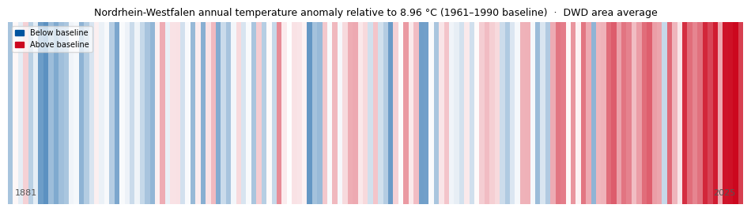

Examples¶
All example scripts are in the examples/ directory and can be run headlessly:
Climate stripes¶
examples/climate_stripes.py
Warming-stripes visualisation for Nordrhein-Westfalen using the official
DWD area-averaged annual mean temperature (1881–2025, 145 years, no gaps).
Cold years in RWTH blue (#00549F), warm years in RWTH red (#CC071E),
opacity proportional to the magnitude of the anomaly relative to the
1961–1990 baseline (~8.96 °C).
The script downloads the data automatically from the DWD Climate Data Center open-data server at runtime; no local data file is needed.

Inspired by Ed Hawkins, University of Reading. Data: DWD Climate Data Center.
New features demo¶
examples/new_features_demo.py
Walkthrough of all v3.1 features:
plot_color_palette()— 13 × 5 RWTH tint grid- New colormaps:
viridis_RWTH,thermal_RWTH,divergent_bm_RWTH,divergent_gy_RWTH pick_colors(n)— greedy farthest-point colour selectioncheck_accessibility()— CVD simulation and delta-E report- Size and journal style modifiers
save_figure()multi-format exportmisc.colorblindCVD-safe cycle
Power-systems demo¶
examples/power_systems_demo.py
Power-system colormaps demonstrated on realistic scenarios:
| Figure | Colormap | Use case |
|---|---|---|
| 2D bus voltage grid | voltage_RWTH |
Voltage magnitude deviations (pu) |
| Line loading bar chart | loading_RWTH |
Thermal loading 0–100 %+ |
| Colormap strips | both | Side-by-side overview |
# Example: voltage map with symmetric normalisation
import matplotlib.colors as mcolors
from rwthplots.cmap import rwth_cmap
norm = mcolors.TwoSlopeNorm(vcenter=1.0, vmin=0.88, vmax=1.12)
ax.imshow(voltages, cmap=rwth_cmap("voltage_RWTH"), norm=norm)
Palette and colour examples¶
examples/colours_example.py — plot_color_palette() and colour set demo.
examples/cmaps_example.py — renders gradient and line-plot previews for
every registered colormap into examples/figures/cmaps/.